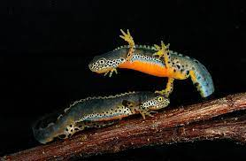

There are many amphibians in the world but only some can be seen in a zoo.
Frogs
Wood frogs evolved to freeze up to 65% of their body every winter!
In order to protect themselves from predators while resting on leaves, these tiny frogs make their skin nearly transparent by packing their red blood cells into their livers.
When a frog swallows food, it pulls its eyes down into the roof of its mouth to help push food down their throats.
Newts

Did you know that some newts shed their skin and then eat the skin? That must be a tasty snack if you are a newt!
Newts can lose their legs and tails and grow them back! This process is called regeneration.
Some newts can eat other newts! The Great Crested Newt likes to eat smooth newts.
Houston toad
The Houston toad is 2 to 3.5 inches long.
ts general coloration varies from light brown to gray or purplish gray, sometimes with green patches.
Males have a dark throat, which appears bluish when distended.